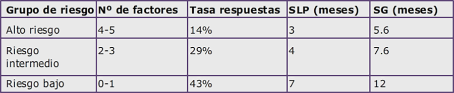
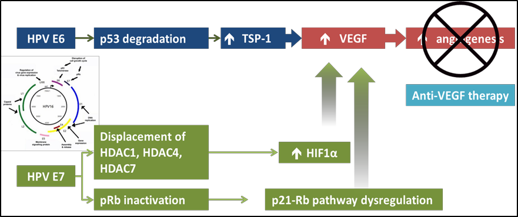
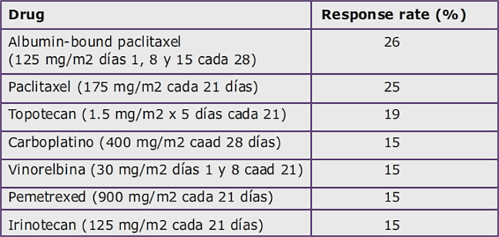

Cáncer de Cérvix

1.10 Tratamiento de la enfermedad persistente, recurrente y metastásica
TRATAMIENTO DE LA ENFERMEDAD PERSISTENTE O RECAÍDA LOCO-REGIONAL SUBSIDARIA DE TRATAMIENTO RADICAL
Aproximadamente un 50% de las primeras recaídas se localizará exclusivamente en la pelvis. La decisión terapéutica en esta situación está condicionada por el lugar de la recidiva, el tratamiento previo y el estado general de la paciente.
En las recidivas pélvicas centrales tras RT o RT-QT la cirugía radical siempre debe ser valorada, ya que es la única opción con potencial curativo para estas pacientes. Esta cirugía implica con frecuencia la realización de una exenteración pélvica. Las pacientes que más pueden beneficiarse de este tratamiento quirúrgico radical son aquellas que cumplan los siguientes criterios:
Recaída pélvica central sin fijación a la pared ni hidronefrosis
Intervalo libre de enfermedad prolongado
Tamaño de la recaída inferior a 3 cm
Habitualmente, las pacientes con recaídas locales tras una cirugía radical son candidatas a un tratamiento locorregional con RT-QT concomitante. En casos muy seleccionados puede plantearse una reirradiación en pacientes que recibieron RT previamente.
TRATAMIENTO DE LA ENFERMEDAD METASTÁSICA, Y DE LA ENFERMEDAD PERSISTENTE O RECAÍDA NO SUBSIDIARIA DE TRATAMIENTO RADICAL
Menos de un 10% de las pacientes diagnosticadas de un carcinoma de cérvix tienen enfermedad diseminada al diagnóstico. El principal volumen de mujeres con presencia de metástasis corresponde a población en recaída tras un tratamiento loco-regional. Como ya se ha comentado, este riesgo de recurrencia se incrementa con el estadio, siendo de un 10-20% en los estadios iniciales y alcanzando un 50-70% en la enfermedad localmente avanzada.
Las principales localizaciones de la enfermedad diseminada incluyen los ganglios paraaórticos, pulmón, hueso y ganglios mediastínicos y supraclaviculares; menos frecuentemente también pueden verse comprometidos el hígado, las glándulas suprarrenales y el sistema nervioso central.
Importante: En esta situación, el tratamiento sistémico constituye la principal opción terapéutica, exceptuando las pacientes con afectación extrapélvica exclusivamente ganglionar paraaórtica de inicio, en las que el tratamiento estándar es la radio-quimioterapia concomitante adecuando los campos de irradiación a las regiones afectas.
En ocasiones, puede producirse una recaída aislada en ciertas localizaciones como el pulmón o los ganglios para-aórticos o supraclaviculares. En estos casos puede plantearse un tratamiento local con radioterapia o cirugía, seguido o no de quimioterapia.
Las pacientes con cáncer de cérvix diseminado con frecuencia necesitan diversos tratamientos paliativos. Ante una recaída pélvica es muy probable que en algún momento se produzcan complicaciones que afectan de forma importante a la calidad de vida, y que requerirán tratamientos específicos:
Atrapamientos ureterales: que requerirán una derivación urinaria, con pig-tails o nefrostomías.
Fístulas (recto-vaginales, vesico-vaginales, etc): en las que habrá que plantear cirugías paliativas, como la colostomía, o derivaciones urinarias.
Dolor: en ocasiones puede ser de difícil control con analgésicos, y habrá que valorar un bloqueo nervioso.
Sangrados vaginales: que podrían aliviarse con radioterapia paliativa.
A continuación, se revisará el tratamiento sistémico de la enfermedad diseminada, analizando los principales ensayos clínicos publicados.
1 Dobletes de cisplatino
El cisplatino fue el primer fármaco que demostró en la década de los 70 una cierta actividad, con una tasa de respuestas de un 13-38%, una mediana de supervivencia libre de progresión (SLP) de 3 meses y una mediana de SG de 6,5-8,8 meses, según los estudios (Thigpen 1981; Omura 1997; Moore 2004; Long 2005).
En 1985, el Gynecologic Oncology Group (GOG) publicó un ensayo fase III (GOG 43) que comparaba tres esquemas de tratamiento con cisplatino en monoterapia (50 mg/m2 cada 21 días vs. 100 mg/m2 cada 21 días vs. 20 mg/m2/día x 5 días cada 21 días), sin observarse diferencias significativas ni en la SLP ni en la SG entre las tres ramas. Por ello, permaneció la dosis de 50 mg/m2 cada 21 días como el esquema recomendado.
Son muchos los ensayos que han explorado la actividad de otros fármacos, con resultados modestos: ifosfamida, ciclofosfamida, carboplatino, topotecán, irinotecán, paclitaxel, 5 fluorouracilo, gemcitabina, vinorelbina, etopósido, doxorubicina. Desde hace varias décadas el cisplatino es considerado como el fármaco más activo en monoterapia y, en un segundo término, se sitúan paclitaxel, topotecán, gemcitabina, vinorelbina e ifosfamida.
Los pobres resultados observados con la monoterapia impulsaron el estudio de otras estrategias terapéuticas como los dobletes de quimioterapia. Los resultados de los ensayos fase II ayudaron a seleccionar los dobletes más activos para su posterior valoración en estudios fase III frente a cisplatino en monoterapia, que seguía constituyendo el estándar en esos momentos.
El ensayo GOG 169 comparó la combinación de cisplatino (50 mg/m2) y paclitaxel (135 mg/m2 en infusión de 24 horas) con cisplatino en monoterapia (50 mg/m2). La combinación incrementó la tasa de respuestas (36% vs 19%), la SLP (4,8 meses vs 2,8 meses), sin alcanzar diferencias estadísticamente significativas en la SG. La toxicidad hematológica fue superior con el doblete, pero sin detrimento en la calidad de vida.
El ensayo GOG 179 comparó la combinación de cisplatino (50 mg/m2 día 1) y topotecán (0,75 mg/m2 día 1,2 y 3) con cisplatino en monoterapia (50 mg/m2), cada 3 semanas. De nuevo, la rama de tratamiento combinado fue más activa, con un aumento de la tasa de respuestas (27% vs 13%), la SLP (4,6 meses vs 2,9 meses), y en este caso también la SG (9,4 meses vs 6,5 meses). Una vez más, la terapia combinada presentó una mayor toxicidad, principalmente hematológica, sin diferencias significativas en el análisis de calidad de vida.
El análisis de la población incluida en estos dos estudios puede justificar por qué sólo el GOG 179 consiguió demostrar diferencias estadísticamente significativas en la SG. Mientras que en el GOG 169 solo entre el 24-30% de las pacientes habían recibido cisplatino previo, este porcentaje llegaba hasta el 58% en el GOG 179. Esto implicó que las pacientes del GOG 179 tuvieran un peor pronóstico, tal y como se puede observar en las medianas de SG del brazo control con cisplatino (6.5 meses en el GOG 179 frente a 8.8 meses en el GOG 169), Por ello, aunque la mediana de SG del doblete de platino en ambos estudios fue muy similar (9.4 y 9.7 meses), sólo en el estudio GOG 179 se alcanzaron diferencias significativas.
El ensayo GOG 204, se inició como un fase III con dos ramas, que comparaba la combinación de cisplatino y vinorelbina con cisplatino y paclitaxel (rama control). La publicación de los resultados del estudio GOG 179 y de un fase II con cisplatino más gemcitabina determinó un cambio en el diseño del estudio, incorporando también estos dos dobletes. La rama de cisplatino-paclitaxel fue considerada la rama control frente a la que fueron comparadas las otras tres combinaciones. El estudio fue cerrado prematuramente con 513 pacientes incluidas cuando un análisis interino no observó diferencias significativas en la SG, en la SLP ni en la tasa de respuestas, y con una tendencia favorable a la rama de cisplatino-paclitaxel.
Importante: Tras los diferentes ensayos fase III que compararon dobletes de quimioterapia se concluyó que el tratamiento estándar del cáncer de cérvix diseminado debía consistir en un doblete de cisplatino, siendo la combinación cisplatino-paclitaxel trisemanal la considerada de referencia a partir de ese momento.
2 Factores clínicos pronósticos en pacientes tratadas con cisplatino
Con los datos de varios de estos ensayos, el GOG identificó diversos factores clínicos que se asociaban a la probabilidad de respuesta a cisplatino y al pronóstico en el cáncer de cérvix diseminado:
PS > 0
Enfermedad pélvica
Intervalo libre de enfermedad < 1 año
Raza afroamericana
Tratamiento previo con platino
Con estos factores se elaboró un modelo pronóstico, conocido como Criterios de Moore, en el que se categorizaban a las pacientes en tres grupos, según el número de factores presentes, con marcadas diferencias en la tasa de respuestas, SLP y SG (siguiente tabla).
Grupos de riesgo según factores pronósticos presentes en el tratamiento del cáncer de cérvix diseminado
3 Sustitución de cisplatino por carboplatino
Más recientemente se publicaron los resultados de un ensayo fase III del grupo japonés (JCOG 0505) que pretendía evaluar si la sustitución de cisplatino por carboplatino podía hacer más accesible el tratamiento a pacientes con alteración de la función renal (algo relativamente frecuente en el cáncer de cérvix) sin comprometerse la eficacia. Se comparó el esquema considerado de referencia (cisplatino 50 mg/m2 + paclitaxel 135 mg/m2) frente a carboplatino AUC 5 + paclitaxel 175 mg/m2. No hubo diferencias en la tasa de respuestas ni en la SG. Las pacientes que recibieron carboplatino-paclitaxel tuvieron menos neutropenia G4, toxicidad renal y emesis, pero más trombopenia y neurotoxicidad. Un análisis exploratorio mostró que en las pacientes que habían sido tratadas previamente con cisplatino seguía sin identificarse diferencias entre ambos esquemas, pero en aquellas que no habían recibido previamente cisplatino, el esquema cisplatino-paclitaxel sí parecía ser más eficaz (mediana de SG de 23 vs 13 meses).
Un análisis sistémático con con más de 1000 pacientes incluidas en ensayos clínicos, confirmó que cisplatino podía ser sustituido por carboplatino sin comprometer la eficacia.
Importante: Por tanto, el esquema carboplatino-paclitaxel puede ser una alternativa a cisplatino-paclitaxel en la recaída del cáncer de cérvix. Sin embargo, en aquellas pacientes diseminadas de inicio o que no hayan recibido cisplatino previamente, cisplatino-paclitaxel podría ser más eficaz.
4 Bevacizumab
La angiogénesis juega un papel importante en el desarrollo y progresión del cáncer de cérvix. La identificación de vasos atípicos en la colposcopia de mujeres con citología alterada supone un rasgo distintivo de enfermedad invasiva. Diversos estudios han mostrado que el aumento de la densidad microvascular, la sobre-expresión de CD31 (marcador de células endoteliales) y de VEGF (Vascular Endotelial Growth Factor) se asocian a un mal pronóstico. Los oncogenes virales E6 y E7 estimulan la sobre-expresión de VEGF a través de la inactivación proteica de p53 y Rb, y la hiperexpresión de HIF1α (siguiente figura).
Mecanismos de sobre-expresión de VEGF en el cáncer de cérvix a través de los oncogenes virales E6 y E7.
Estos resultados dieron lugar al desarrollo de la terapia antiangiogénica en el cáncer de cérvix, en concreto con el anticuerpo monoclonal anti-VEGF bevacizumab. Tras la publicación de una interesante actividad de bevacizumab en monoterapia en un estudio fase II (tasa de respuestas de un 11% y un 45,7% de estabilizaciones), el GOG diseño un ambicioso ensayo fase III llamado GOG 240. Este estudio tenía un diseño factorial 2x2 y pretendía responder a dos cuestiones:
Si la adición de bevacizumab a la quimioterapia mejoraba la eficacia.
Si la utilización de un esquema de quimioterapia sin platino podía ser equivalente en eficacia y con menor toxicidad que la combinación de cisplatino.
Para ello se randomizaron 452 pacientes a recibir cisplatino-paclitaxel vs paclitaxel topotecan, y cada uno de los grupos con o sin bevacizumab a dosis de 15 mg/Kg, como primera línea de tratamiento para la enfermedad diseminada. Las pacientes recibieron la quimioterapia + bevacizumab hasta progresión o toxicidad inaceptable, pero no se permitió el uso de bevacizumab de mantenimiento sin quimioterapia. La adición de bevacizumab mejoró todos los parámetros de eficacia (tasa de respuestas: 48% vs 36%, SLP: HR 0.67, 8 vs 6 meses, y SG: HR 0.71, 17 vs 13.3 meses). Sin embargo, el esquema paclitaxel-topotecan fue inferior al esquema con cisplatino, con una disminución de la PFS (5.7 vs 7.6 meses), y una tendencia a una menor SG sin alcanzar la significación estadística. Respecto a la toxicidad de bevacizumab, además de los eventos adveros ya esperados (aumento de la hipertensión arterial, neutropenia y tromboembolismo), en este ensayo se observó un aumento significativo de la incidencia de fístulas (8.6% vs 1%). Por ello, se deberían seleccionar adecuadamente las pacientes y no administrar bevacizumab en aquellas que puedan tener un riesgo aumentado de desarrollar fístula (infiltración tumoral de recto o vejiga, por ejemplo).
Para la utilización de bevacizumab con carboplatino y paclitaxel debemos esperar a los resultados definitivos de un ensayo clínico en marcha.
Importante: En la actualidad la combinación de cisplatino, paclitaxel y bevacizumab es el esquema más activo en el cáncer de cérvix diseminado. La utilización de esquemas sin platino obtiene peores resultados.
Por tanto, durante los últimos 15 años, gracias a la introducción de los dobletes de platino primero, y a la adición de bevacizumab después, se ha conseguido duplicar la mediana de SG de las pacientes con cáncer de cérvix diseminado, pasando de 7-8 meses que se conseguía con cisplatino en monoterapia hasta los 17 meses que se obtienen con cisplatino-paclitaxel y bevacizumab (siguiente figura).
Evolución de la mediana de SG en los diversos ensayos fase III de primera línea del cáncer de cérvix diseminado
5 Tratamiento de segunda línea
Es importante recordar que hasta la fecha no hay evidencia de que algún tratamiento utilizado tras la progresión a la primera línea del cáncer de cérvix mejore la SG con respecto al mejor tratamiento de soporte. Aun así, para aquellas pacientes que mantienen buen estado general en el momento de la progresión tumoral, puede recomendarse una monoquimioterapia basándonos en los resultados de diversos ensayos fase II que muestran una cierta actividad de algunos fármacos (siguente tabla). Ante la ausencia de un claro beneficio significativo de todos ellos debería estimularse la participación de estas pacientes en ensayos clínicos.
Actividad de fármacos estudiados en segunda línea del cáncer de cérvix
6 Nuevas opciones terapéuticas
Al igual que este ocurriendo en otros tumores, parece que la inmunoterapia tendrá un papel muy importante en el futuro del tratamiento del cáncer de cérvix. Este tumor tiene una serie de factores que podrían ser predicitivos de una buena respuesta a este tratamiento, como la presencia de antígenos asociados al tumor, las oncoproteínas E6 y E7, una alta carga mutacional o la presencia de infiltrado linfocitario, principalmente linfocitos CD4 y CD8.
En un primer estudio fase Ib, el KEYNOTE-028 (Frenel JS et al, JCO 2017), en el que 24 pacientes pretratadas (63% con ≥ 2 líneas) con cáncer de cérvix PDL1+ recurrente o metastásico, recibieron tratamiento con pembrolizumab, se observó una tasa de respuestas del 17%, con una duración media de 5.4 meses y una mediana de supervivencia global de 11 meses. Posteriormente, se presentó el estudio fase II KEYNOTE-158, que incluyó 98 pacientes con carcinoma epidermoide de cérvix, de los que el 79% expresaban PDL1, tratadas con al menos una línea previa de quimioterapia, y que recibieron tratamiento con pembrolizumab, a dosis de 200 mg cada 3 semanas. La tasa de respuesta en las pacientes PDL1+ fue del 14.3%, en las que en el 91% la respuesta tuvo una duración ≥ 6 meses. Estos resultados llevaron a la aprobación de este fármaco en EE.UU. para pacientes con cáncer de cérvix PDL1+ que hayan progresado a una línea previa de quimioterapia.
Actualmente existen múltiples líneas de investigación y diversos estudios en marcha con fármacos inmumoduladores, tanto en monoterapia como en combinación, que nos permitirá establecer con mayor claridad el papel futuro tendrá la inmunoterapia en las pacientes con cáncer de cérvix.